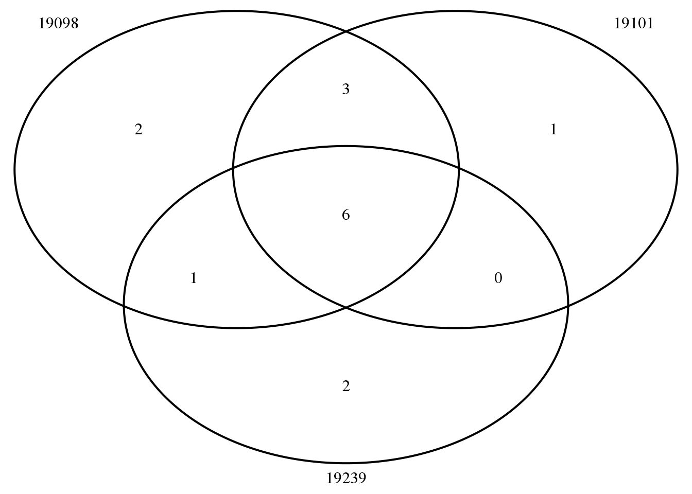
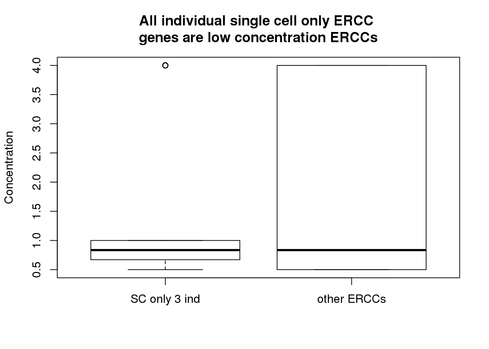

Last updated: 2017-03-15
Code version: a9b79ed
Input packages and functions
library("biomaRt")
library("dplyr")
library("edgeR")
library("ggplot2")
theme_set(theme_bw(base_size = 12))
source("../../singleCellSeq/analysis/functions.R")
library(VennDiagram)Input data:
anno <- read.table("../../singleCellSeq/data/annotation.txt", header = TRUE,
stringsAsFactors = FALSE)
#input reads (pre-filter)
reads <- read.table("../../singleCellSeq/data/reads.txt", header = TRUE,
stringsAsFactors = FALSE)
#input molecule (pre-filter)
molecules <- read.table("../../singleCellSeq/data/molecules.txt", header = TRUE,
stringsAsFactors = FALSE)
#input bulk reads (pre-filter )
reads_bulk <- read.table("../../singleCellSeq/data/reads-bulk.txt", header = TRUE, stringsAsFactors = FALSE)Create vectors with the list of genes in each set.
genes_observed_reads_bulk <- rownames(reads_bulk)[rowSums(reads_bulk) > 0]
genes_observed_reads <- rownames(reads)[rowSums(reads) > 0]
genes_observed_molecules <- rownames(molecules)[rowSums(molecules) > 0]
single_cell_observed <- union(genes_observed_molecules, genes_observed_reads)gene_onlysinglecell <- setdiff(single_cell_observed,genes_observed_reads_bulk)
genes_onlysinglecell_ERCC <- gene_onlysinglecell[grep("ERCC", gene_onlysinglecell)]
molecules_df= data.frame(molecules)
molecules_sconly_ERCC <- molecules_df[rownames(molecules_df) %in% genes_onlysinglecell_ERCC,]
dim(molecules_sconly_ERCC)[1] 15 864Explore the SC only ERCCs
ERCC_sc_only= rownames(molecules_sconly_ERCC)
ERCC_sc_only [1] "ERCC-00016" "ERCC-00048" "ERCC-00057" "ERCC-00075" "ERCC-00083"
[6] "ERCC-00086" "ERCC-00097" "ERCC-00104" "ERCC-00123" "ERCC-00137"
[11] "ERCC-00138" "ERCC-00156" "ERCC-00158" "ERCC-00164" "ERCC-00168"ERCC_sc_mean= apply(molecules_sconly_ERCC, 1, mean)
ERCC_sc_mean ERCC-00016 ERCC-00048 ERCC-00057 ERCC-00075 ERCC-00083 ERCC-00086
0.001157407 0.149305556 0.004629630 0.001157407 0.040509259 0.006944444
ERCC-00097 ERCC-00104 ERCC-00123 ERCC-00137 ERCC-00138 ERCC-00156
0.010416667 0.018518519 0.002314815 0.003472222 0.001157407 0.004629630
ERCC-00158 ERCC-00164 ERCC-00168
0.013888889 0.040509259 0.012731481 Number of Cells each ERCC is in
non_zero_cells_ERCC <- apply(molecules_sconly_ERCC, 1, function(c)sum(c!=0))
non_zero_cells_ERCC ERCC-00016 ERCC-00048 ERCC-00057 ERCC-00075 ERCC-00083 ERCC-00086
1 112 3 1 33 6
ERCC-00097 ERCC-00104 ERCC-00123 ERCC-00137 ERCC-00138 ERCC-00156
9 16 2 3 1 4
ERCC-00158 ERCC-00164 ERCC-00168
12 35 11 molecules_sconly_ERCC_19098= molecules_sconly_ERCC[,grep("19098", colnames(molecules_sconly_ERCC))]
non_zero_cells_ERCC_19098 <- apply(molecules_sconly_ERCC_19098, 1, function(c)sum(c!=0))
molecules_sconly_ERCC_19098= cbind(molecules_sconly_ERCC_19098,non_zero_cells_ERCC_19098)
non_zero_sc_ERCC_19098= molecules_sconly_ERCC_19098[molecules_sconly_ERCC_19098$non_zero_cells_ERCC_19098>0,]
ERCC_19098=rownames(non_zero_sc_ERCC_19098)molecules_sconly_ERCC_19101= molecules_sconly_ERCC[,grep("19101", colnames(molecules_sconly_ERCC))]
non_zero_cells_ERCC_19101 <- apply(molecules_sconly_ERCC_19101, 1, function(c)sum(c!=0))
molecules_sconly_ERCC_19101= cbind(molecules_sconly_ERCC_19101,non_zero_cells_ERCC_19101)
non_zero_sc_ERCC_19101= molecules_sconly_ERCC_19101[molecules_sconly_ERCC_19101$non_zero_cells_ERCC_19101>0,]
ERCC_19101= rownames(non_zero_sc_ERCC_19101)molecules_sconly_ERCC_19239= molecules_sconly_ERCC[,grep("19239", colnames(molecules_sconly_ERCC))]
non_zero_cells_ERCC_19239 <- apply(molecules_sconly_ERCC_19239, 1, function(c)sum(c!=0))
molecules_sconly_ERCC_19239= cbind(molecules_sconly_ERCC_19239,non_zero_cells_ERCC_19239)
non_zero_sc_ERCC_19239= molecules_sconly_ERCC_19239[molecules_sconly_ERCC_19239$non_zero_cells_ERCC_19239>0,]
ERCC_19239=rownames(non_zero_sc_ERCC_19239)ERCC_sc_ven <- venn.diagram(x = list("19098" = ERCC_19098,
"19101" = ERCC_19101,
"19239" = ERCC_19239),
filename = NULL, euler.d = FALSE, scaled = FALSE)
grid.newpage()
grid.draw(ERCC_sc_ven)
Which ERCC are seen in all indiv sc
ERCC_all_ind= Reduce(intersect, list(ERCC_19098, ERCC_19101, ERCC_19239))
ERCC_all_ind[1] "ERCC-00048" "ERCC-00083" "ERCC-00097" "ERCC-00104" "ERCC-00164"
[6] "ERCC-00168"ERCC_expected= read.table("cms_095046.txt", header=TRUE, stringsAsFactors = FALSE, fill=TRUE)
ERCC_nums=c("ERCC-00048", "ERCC-00083", "ERCC-00097", "ERCC-00104", "ERCC-00164", "ERCC-00168")
ERCC_all_ind_exp= ERCC_expected[ERCC_expected$ID %in% ERCC_nums, ]
ERCC_nt_ind= ERCC_expected[! ERCC_expected$ID %in% ERCC_nums, ]
boxplot(ERCC_nt_ind$concentration, ERCC_all_ind_exp$concentration,names=c("SC only 3 ind", "other ERCCs"), ylab="Concentration", main= "All individual single cell only ERCC \ngenes are low concentration ERCCs")
sessionInfo()R version 3.3.2 (2016-10-31)
Platform: x86_64-redhat-linux-gnu (64-bit)
Running under: Scientific Linux 7.2 (Nitrogen)
locale:
[1] LC_CTYPE=en_US.UTF-8 LC_NUMERIC=C
[3] LC_TIME=en_US.UTF-8 LC_COLLATE=en_US.UTF-8
[5] LC_MONETARY=en_US.UTF-8 LC_MESSAGES=en_US.UTF-8
[7] LC_PAPER=en_US.UTF-8 LC_NAME=C
[9] LC_ADDRESS=C LC_TELEPHONE=C
[11] LC_MEASUREMENT=en_US.UTF-8 LC_IDENTIFICATION=C
attached base packages:
[1] stats4 parallel grid stats graphics grDevices utils
[8] datasets methods base
other attached packages:
[1] pamr_1.55 survival_2.40-1 cluster_2.0.5
[4] bladderbatch_1.12.0 BiocInstaller_1.24.0 sva_3.22.0
[7] genefilter_1.56.0 mgcv_1.8-15 nlme_3.1-128
[10] beeswarm_0.2.3 org.Hs.eg.db_3.4.0 scales_0.4.1
[13] vioplot_0.2 sm_2.2-5.4 GO.db_3.4.0
[16] GOstats_2.40.0 graph_1.52.0 Category_2.40.0
[19] Matrix_1.2-7.1 AnnotationDbi_1.36.2 IRanges_2.8.1
[22] S4Vectors_0.12.1 Biobase_2.34.0 BiocGenerics_0.20.0
[25] Humanzee_0.1.0 ggplot2_2.2.1 VennDiagram_1.6.17
[28] futile.logger_1.4.3 edgeR_3.16.5 limma_3.30.13
[31] dplyr_0.5.0 testit_0.6 data.table_1.10.4
[34] biomaRt_2.30.0 workflowr_0.4.0 rmarkdown_1.3
loaded via a namespace (and not attached):
[1] Rcpp_0.12.9 locfit_1.5-9.1 lattice_0.20-34
[4] assertthat_0.1 rprojroot_1.2 digest_0.6.12
[7] R6_2.2.0 plyr_1.8.4 futile.options_1.0.0
[10] backports_1.0.5 RSQLite_1.1-2 evaluate_0.10
[13] lazyeval_0.2.0 annotate_1.52.1 splines_3.3.2
[16] stringr_1.2.0 RCurl_1.95-4.8 munsell_0.4.3
[19] htmltools_0.3.5 tibble_1.2 XML_3.98-1.5
[22] AnnotationForge_1.16.1 bitops_1.0-6 RBGL_1.50.0
[25] xtable_1.8-2 GSEABase_1.36.0 gtable_0.2.0
[28] DBI_0.6 git2r_0.18.0 magrittr_1.5
[31] stringi_1.1.2 lambda.r_1.1.9 tools_3.3.2
[34] yaml_2.1.14 colorspace_1.3-2 memoise_1.0.0
[37] knitr_1.15.1 This site was created with R Markdown